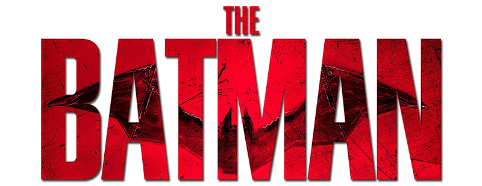

Batman, herói da DC Comics, criado por Bob Kane e Bill Finger, estreou em "Detective Comics" #27 em 1939. Trajando o manto do Cavaleiro das Trevas, Bruce Wayne, também conhecido como Batman, protege Gotham City. Com uma vasta galeria de vilões, incluindo o Coringa e a Mulher-Gato, Batman enfrenta desafios que testam sua coragem e moralidade. Membro da Liga da Justiça, ao lado de Superman e Mulher-Maravilha, ele é uma figura central no universo dos quadrinhos, inspirando fãs por gerações.
assista ao trailer